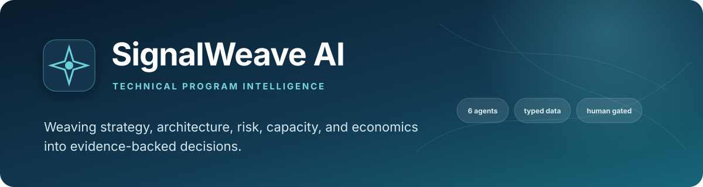

Portfolio project: program decision support with governance
SignalWeave AI
Six specialist agents, one deterministic policy gate, human-owned decisions
Typed inputs go through six narrow specialists, run one after another. Their evidence-linked findings pass through deterministic policy gates before an arbiter creates comparable continue, mitigate, redirect, buy, or stop options. It runs completely offline on synthetic data; the system never approves anything, a human decides outside the tool.
See what is measuredView the repoWhat is not built
- 48 tests passing (counted locally)
- Latest CI run passed (checked)
- Synthetic data only
- Default mode: rule sets, no model called
- Approve button records nothing
- Audit panel is sample data

01
The problem
Large programs rarely fail because one team cannot execute a ticket. They fail at the seams: an API ships after its consumer, two roadmaps assume the same scarce engineers, a privacy review starts too late, or a single service silently becomes the critical path.
Traditional status dashboards describe these conditions after they happen. SignalWeave is designed to expose them while leaders can still act. AI can widen the field of analysis, but it should not hide evidence, collapse uncertainty, or automate executive accountability.
Status is reported by team
Traditional dashboards report status by team; complex programs fail in the seams between those teams. SignalWeave analyzes the seams.
One opaque score is not a decision
SignalWeave presents multiple actions with cost, value, confidence, and modeled risk reduction so uncertainty stays visible.
A confident answer with no source
Finding.evidencecannot be empty, preventing an agent from returning a confident recommendation with no traceable source.
02
How it works
A validated scenario goes to six narrow specialists, one after another. Each returns the same strict assessment contract. A deterministic policy gate decides whether a finding passes, needs human review or blocks; an arbiter then builds comparable options for a human owner.
- Typed scenariostrategy, roadmaps, RFCs, constraints; Pydantic validation first
- Six specialists, in orderstrategy, architecture, dependency, governance, economics, pre-mortem
- Evidence-linked findingsevery finding must cite evidence
- Policy gate
block,human_revieworallow; deterministic code - Decision arbitercomparable options with cost, value, confidence and tradeoffs
- Dashboard, API, CLIplus a sample decision trail (sample data, not a record of anyone's choice)
Stages, one at a time
Stage 1 Validate the scenario
Scenario validation resolves team, objective, initiative, service, dependency, and API-consumer IDs before specialists run, so broken references fail early. Input contracts reject unexpected shapes.
Stage 2 Six narrow specialists
Each agent owns one analytical lens and returns the same strict AgentAssessment contract. They run one after another and do not call each other, negotiate or iterate.
In the default offline mode these agents are rule sets, not models. With NORTHSTAR_PROVIDER=openai a model's structured assessment replaces the rule-based one, and any provider error falls back to the rules.
Stage 3 Evidence and policy gate
The gate returns block, human_review or allow. High severity, low confidence, irreversible, privacy or security findings are escalated for human review. Agent output is treated as untrusted data until schema validation and policy evaluation succeed.
Stage 4 Options for a human
The arbiter creates comparable options with confidence, evidence, owners and the human approvals they would require. Approval itself happens outside the tool.
There is no approval workflow in code, only the gate status. The dashboard's "Demo: approve option" button just updates on-page text, is labelled as a demonstration, and records nothing.
03
What is measured
The only numbers are deterministic outputs of the bundled synthetic scenario. There is no benchmark, accuracy figure or real-world result.
The checked-in scenario, a fictional digital marketplace, currently produces these deterministic values. Re-run locally with northstar --scenario examples/synthetic_portfolio.json --provider offline for the same figures.
| Synthetic demo measure | Deterministic output | Interpretation |
|---|---|---|
| Specialist assessments | 6 | One result from each narrow analyzer |
| Evidence-linked findings | 9 | Seven are high or critical |
| Capacity utilization | 105.9% | Synthetic demand exceeds supplied team capacity |
| Modeled annual cost | $4.60M | Sum of fictional initiative inputs |
| Modeled annual value | $9.50M | Illustrative input, not a forecast |
| Modeled cost delta | $487K | Difference after applying recommended option costs |
| Decision options | 13 | Comparable actions across five initiatives |
Caveat These are generated demonstration values, not measured business results, predictions, benchmarks, or claims about a real organization. Model scores are decision aids; they are only as sound as their inputs and assumptions.
Source: examples/synthetic_portfolio.json, README "Synthetic demonstration"
04
Architecture pattern
Pattern Orchestrator-Worker, with a deterministic governance gate. DecisionOrchestrator runs a fixed list of six specialist agents over one scenario, merges their findings, applies policy.evaluate_gate, and synthesises options in arbiter.py. The orchestrator is plain Python: the agent list and order are hard-coded, and the specialists run one after another, not as an LLM-planned or concurrent fan-out.
Each specialist computes rule-based findings first; in the default offline mode those are the output and no model is called. The gate, option scoring, metrics and report ID are always deterministic code. The system never acts on its own; a human decides on the surfaced options. This is a single pass, not an autonomous loop or a swarm.
- Strategy, roadmaps, RFCs, constraintsPydantic validation
- Orchestratorplain Python, hard-coded agent list and order
- Six specialistsstrategy, architecture, dependency, governance, economics, pre-mortem; one after another
- Evidence-linked findingsmerged by the orchestrator
- Policy gatesescalate to human review, or allow
- Decision arbiteroptions and tradeoffs
- Web dashboard, API, CLIplus a sample decision trail
05
Competencies demonstrated
Risk and governance design
Severity thresholds, confidence rules, privacy/security blocks, external-processing controls and human escalation, in
policy.py.Cross-domain technical analysis
API compatibility, service resilience, dependency sequencing and single-point-of-failure detection in the architecture and execution agents.
Applied AI systems engineering
Provider isolation, structured outputs, deterministic fallback, retry and timeout configuration, tested with mocked providers.
Portfolio and investment judgment
Cost and value comparison, capacity pressure and continue, mitigate, redirect, buy or stop options.
Quality and delivery discipline
Automated tests, Python 3.11/3.12 CI, strict validation and offline verification; no test needs a provider credential or network.
06
What is not built or not verified yet
Taken from the repository's own README and its known limits. This is part of the pitch: the gaps are known, written down and not rounded away.
- not built
Approval workflow
There is no approval workflow in code, only the gate status. The "Demo: approve option" button records nothing; a human owner decides outside this tool.
- limit
The audit panel is sample data
The dashboard's audit log is a sample trail of pipeline events; it does not record anyone's selection.
- limit
Default "agents" are rule sets
In the default offline mode the specialists are rule sets rather than models. The specialists do not call each other, negotiate or iterate.
- not verified
Hosted-model path
Optional provider adapters are tested with mocked clients and no test calls a live service. Model output can be incomplete or wrong and must remain schema-validated and reviewable.
- limit
Illustrative scoring
Synthetic weights and scores are illustrative, not statistically calibrated. A dependency graph cannot capture every political, contractual, or organizational constraint.
- not built
Evaluation against real decisions
Replaying historical program decisions, measuring finding precision and recall, calibrating confidence, and testing whether recommendations improve real decision quality is named as the next extension and is not done.
- not built
Production controls
Production use would require identity, authorization, retention controls, observability, red-team evaluation, calibrated scoring, and organization-specific policy review. This is a portfolio decision aid, not a production change authority.
07
Roadmap
- DoneOffline deterministic workflow, CLI, local dashboard and JSON API
- DoneOptional OpenAI provider adapter behind the same validated contracts (tested with mocks)
- DoneOptional OpenTelemetry tracing (a no-op unless configured)
- Not doneEvaluation: replay historical decisions, measure precision and recall, calibrate confidence
- Not doneAn approval workflow that records who decided what (none exists in code today)